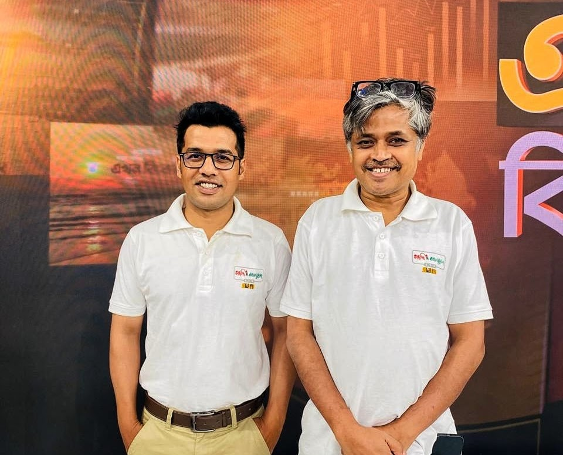
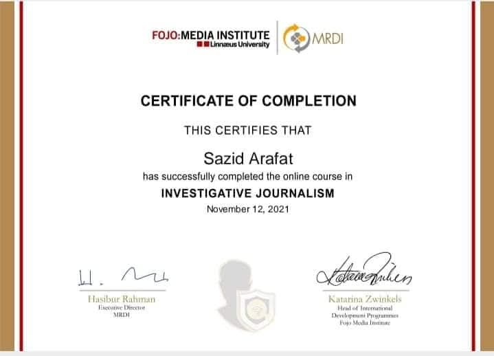
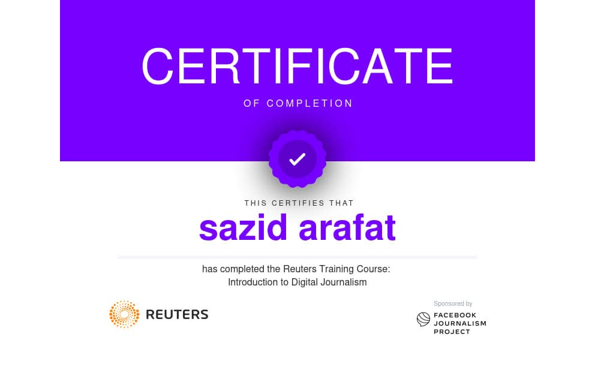
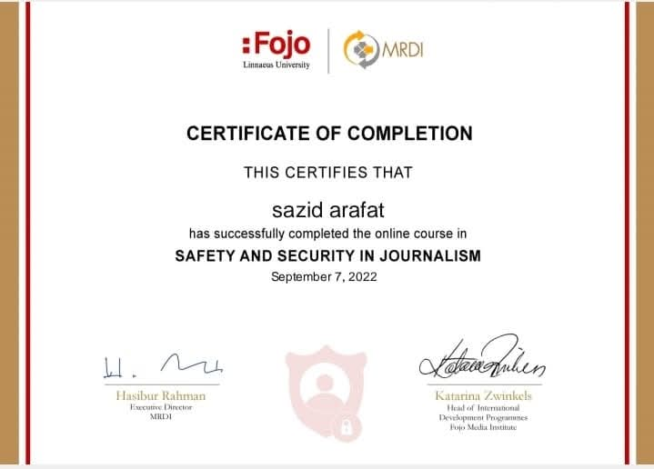

Visual Stories
View All
Field Photography


Sazid Arafat is a Bangladeshi journalist currently serving as a staff reporter at Ekhon TV.
VIEW PORTFOLIOInvestigative packages and live segments produced for Ekhon TV (Channel 252)




Every message is read personally — reach out today.